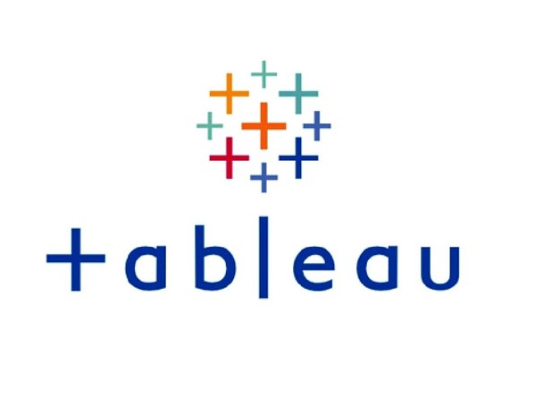

Unveiling my Data Skills
Together, let's unravel the hidden stories within data and pave the way for informed decisions.
Welcome to my Data Analytics Portfolio! I am Ketan Kshirsagar, a results-driven Data Analyst with over four years of experience in transforming complex data into actionable insights.
With a Master’s degree in Data Analytic Engineering and extensive experience in healthcare and technology sectors, I specialize in data preprocessing, advanced statistical analysis, visualization, and machine learning. My expertise has helped organizations optimize decision-making processes, streamline operations, and derive strategic value from their data.
Throughout my career, I’ve successfully built and refined data models, crafted insightful visualizations, and developed automated reporting solutions that have significantly impacted business outcomes. My approach is centered on translating raw data into clear, concise narratives that not only inform but also inspire action.
This portfolio demonstrates my ability to drive value through data, and I am excited to bring this expertise to new challenges.
Let’s explore how I can help your organization unlock the power of its data to drive smarter decisions and foster growth.
Together, let's unravel the hidden stories within data and pave the way for informed decisions.
Designed an interactive Power BI dashboard to analyze NYC Airbnb listings, offering insights on pricing, reviews, host activity, and room distribution across boroughs. Performed data cleaning and transformation using Power Query Editor, ensuring data accuracy and consistency. Leveraged DAX to create dynamic measures and slicers, enabling users to filter data by room type, location, ratings, and more.
In my academic endeavour, I undertook a data mining project centered on NASA's asteroid classification dataset, an exploration that underscored my prowess in machine learning and data analysis. This project, a testament to my collaboration skills, technical acumen, and dedication, significantly enriched my proficiency in data-driven exploration and analysis.
By leveraging Citi Bike's data, We performed data filtering, wrangling, and visualization using R Studio. Through insightful visualizations, We uncovered patterns in trip durations, popular routes, and user behaviours. This project not only highlights my proficiency in R but also demonstrates my ability to extract meaningful insights from real-world datasets.
Developed a comprehensive 'WithYou NGO Database Management System' using SQL, efficiently organizing donor, events, and beneficiary data. In this project, I structured ER Diagram using Lucid Chart and implanted into database. To ensure transparent reporting, I employed Power BI for dynamic visualization dashboards, displaying event expenditures and fostering user engagement.
Built a credit score classification system using machine learning models to categorize customers into Good, Standard, and Poor credit segments. Performed detailed data analysis and visualizations to identify key factors affecting creditworthiness, including income, credit history, and financial habits. Designed to help financial institutions make informed, data-driven decisions for credit risk assessment and loan approvals.

I have designed and executed diverse Tableau projects showcasing my expertise in data visualization and analysis. I transformed complex datasets into insightful dashboards. My work includes interactive visualizations for sales trends, geographical mapping of customer distribution, and dynamic KPI tracking. Each project highlights my proficiency in translating data-driven insights into actionable business decisions.

This presentation is a testament to the power of AWS in transforming the way Expedia manages its infrastructure, emphasizing the potential for improved performance, cost optimization, and heightened security. With a background in AWS and data-driven decision-making, I aim to showcase the strategic insights that can be harnessed to enhance Expedia's infrastructure while ensuring a seamless and secure online travel experience for its global user base

This presentation dives into the strategic use of AWS services, ElastiCache and Elastic Load Balancing (ELB), offering clear insights into how these tools can bolster the scalability and availability of web applications. Addressing this concern is crucial, especially during peak seasons and high-demand periods. It's a resource for both technical and non-technical stakeholders, aiming to bridge the gap between complex cloud solutions and real-world business needs.
Palm Springs, FL 33461